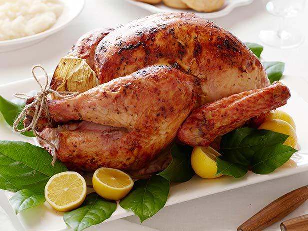

Perfect Turkey

Description
Moist turkey, perfect for the holiday season
Ingredients
- Whole turkey, neck and gibletts removed
- 2 Cups Kosher salt
- 1/2 cup butter, divided
- 2 large onions, chopped, divided
- 4 carrots, coarsely chopped, divided
- 4 stalks celery, chopped, divided
- 2 sprigs fresh thyme, divided
- 1 bay leaf
- 1 cup dry white wine
Steps
- Rub turkey inside and out with kosher salt;
place in a large stockpot and cover with cold water. Cover and refrigerate
to allow turkey to soak in brine solution for 12 hours, or overnight.
- Preheat the oven to 350 degrees F (175 degrees C). Thoroughly rinse the
turkey; discard the brine mixture.
- Brush turkey with 1/2 of the melted butter. Place breast-side down on a
roasting rack in a shallow roasting pan. Stuff turkey cavity with 1/2 the
onion, 1/2 the carrots, 1/2 the celery, 1 sprig of thyme, and bay leaf. Scatter
remaining vegetables and thyme in the bottom of the roasting pan;
pour white wine over vegetables.
- Roast turkey in the preheated oven, uncovered, until no longer pink at the
bone and the juices run clear, about 3 1/2 to 4 hours. Carefully turn turkey
breast-side up about 2/3 through the roasting time, and brush with remaining butter.
An instant-read thermometer inserted into the thickest part of the thigh, near the bone,
should read 165 degrees F (74 degrees C).
- Allow turkey to rest 30 minutes before carving